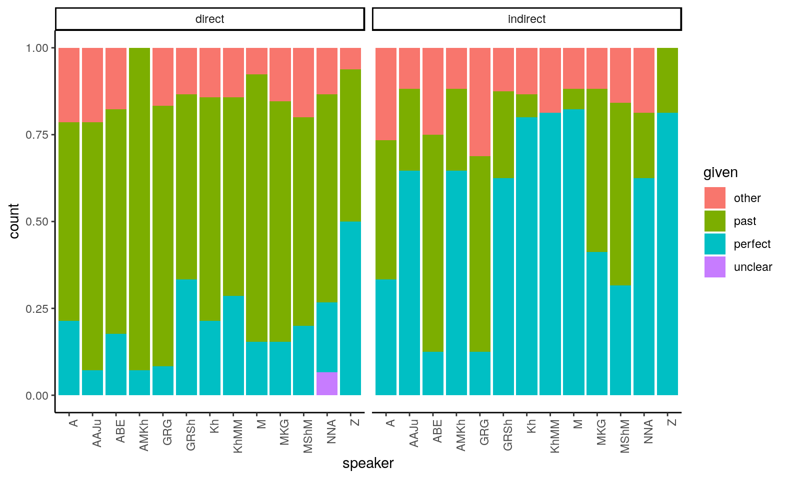

Evidentiality in East Caucasian
The dissertation_evidentiality repository contains data collected for my PhD project on Evidentiality as part of tense-aspect in East Caucasian languages (2015–2019). The full text of my dissertation (in Russian) and summaries in Russian and English can be downloaded here. An overview paper in English is currently in preparation. This page introduces the data. It features searchable datatables and interactive maps.
In the repository you will find the following data:
- Tables with data on evidential markers
- Annotated surveys
- Annotated narrative data
- Interactive maps
Acknowledgements
This page was created with RMarkdown in RStudio (RStudio Team 2018). I used the following packages: tidyverse (Wickham 2017) for data manipulation, lingtypology (Moroz 2017) for map visualizations, ggpubr (Kassambara 2018) for lollipop graphs and DT (Xie, Cheng, and Tan 2019) to create data tables.
Maps created with lingtypology use map visualizations from the leaflet library. The ultimate source of a particular map tile (e.g. Esri or OpenStreetMap) is credited at the bottom of the image.
Special thanks to George Moroz for being my mentor in R.
Introduction
Evidential markers indicate how a person came to know about the event they are talking about, for example through personal experience, logical inference or hearsay.
In the Caucasus this category is commonly expressed with a perfect form of the verb, indicating that the speaker did not witness the event. Other means to express evidentiality include particles and specialized auxiliaries (see an overview on East Caucasian languages in Forker (2018)).
My dissertation focused on the question to what extent evidentiality as a meaning of the perfect is grammaticalized in languages of the East Caucasian family, and additionally: whether it could have emerged under the influence of local Turkic languages. So in addition to comparing form and function, I plotted various maps to visualize the areal distribution of features.
Data
Evidential markers
To compare the form and function of evidential markers, I looked at descriptive grammars and papers on 44 idioms of 32 languages (all of the traditionally recognized East Caucasian languages + 3 Turkic languages, and some additional lects). A full list of sources can be found in the bibliography.bib file in this repository.
The perfect
- All East Caucasian languages have 1–4 forms resembling a perfect1
- Many, but not all of these forms express evidentiality
- Chechen and Tsakhur employ a specialized auxiliary instead of a perfect to express evidentiality2
The forms in question look quite similar: most common are periphrastic constructions with a converb and a present tense copula.
##
## auxiliary copula no auxiliary predicative marker
## converb 3 26 8 8
## participle 1 8 4 6
## stem 0 2 0 0
## unclear 0 0 4 0The perfect can express tense-aspect and evidentiality at the same time, when the speaker infers from some result or consequence at speech time that a certain event occurred in the past.
If it is sufficiently grammaticalized as an evidential marker, the perfect can refer to an unwitnessed event in the past without the implication of some relevant consequence at the moment of speech. It is important to note that a single form can function as a full-fledged unwitnessed past in some contexts (most importantly narrative sequences), while retaining prototypical perfect functions in other contexts.
In some languages, the general past is considered a grammaticalized marker of direct evidentiality (witnessed past) in contrast with the perfect, which expresses indirect evidentiality (unwitnessed past). Since these direct forms also occur in the context of unwitnessed events, they could simply be neutral forms that carry witnessed overtones in particular contexts.
In the table below you can find all the forms I labeled as perfects or rather – “perfectoids”: forms that are very similar to the cross-linguistic perfect category, but which might not have current relevance (the prototypical meaning of the perfect) as their main function. A more detailed discussion of perfect typology and my decisions in classifying certain forms can be found in my dissertation.
Table: Perfectoids
Clitics
Specialized evidential morphemes in East Caucasian usually come in the form of clitic particles. Some of them attach to inflected verbs, while others are focus sensitive particles that can attach to any type of constituent (though they attach to the verb by default). These clitics often originate from verbs of speech, with some languages featuring petrified verb forms or even full verbs used as clitics. The vast majority of clitics mark reported speech. Inferential and general indirect particles are attested only in two languages.
Not all reported speech clitics are evidentials. Most of them are quotative particles, used to mark the boundaries of a quotation, rather than indicate the source of information per se. In East Caucasian a single morpheme can function both as a quotative and a reportative particle. The latter indicates that the information was based on hearsay. In my data, I labeled as “evidential” all of the clitics known to have a reportative function.
The data on clitics suffer from descriptive gaps. Particles are an underdescribed word class, and classification is inconsistent.
Table: clitics for reported speech and inference
Surveys
The aim of the surveys I conducted was to check whether the perfect in certain idioms has an evidential meaning. Second, I wanted to verify its grammatical status by comparing the use of past tense forms in a limited context across speakers.
- Small evidentiality survey: A short survey aimed at eliciting evidential forms
- The Perfect Questionnaire: Questionnaire aimed at eliciting different functions of the perfect (Dahl 2000, 800–818)
- Narrative test: An elaboration of the narrative questions from the Perfect Questionnaire
The surveys are currently available as tables with the following information:
- discursive context
- sentence for translation
- translat_original - the initial translation written down in Cyrillic orthography
- translit_morph - the transliteration of the answer with morpheme boundaries
- gloss
- translation - if applicable, a translation of the answer
- target_verb - the verb from the original sentence that I am interested in
- target_translation - the translation of the target of interest
- expected answer
- given answer
- metadata: speaker, idiom, language, gender, birthyear, date of elicitation
At some point I will convert this to .tex and .pdf also to make the answers easier to read.
Small evidentiality survey
The small evidentiality survey consists of 11 questions, some of which elicit multiple sentences.3 The table below displays the number of sentences elicited from each speaker in conjunction with their language and idiom. This survey was exploratory in nature.4 Some of the Rutul results are discussed in Ferxees (2017).
## # A tibble: 6 x 4
## # Groups: language, idiom [4]
## language idiom speaker sentences
## <chr> <chr> <dbl> <int>
## 1 Andi Zilo 1 4
## 2 Andi Zilo 2 16
## 3 Avar ? 1 23
## 4 Dargwa Itsari 1 11
## 5 Rutul Kina 1 12
## 6 Rutul Kina 2 8The Perfect Questionnaire
The Perfect Questionnaire was completed with two speakers of Avar (Khunzakh dialect) and two speakers of Andi (Rikvani and Zilo dialect). The methodology considers one speaker sufficient, though more speakers can be consulted to “enhance reliability” (Dahl 2000, 800).
The speakers gave rather different answers, which could be due to dialectal variation (Andi) or sociolinguistic factors such as age or sex. One Avar speaker avoided using perfects (see the graph below), which I suspect might be due to his young age and lack of confidence in his own proficiency, though this is only speculation.
(The variable “not p” in the graph covers the general past tense (in this case: aorist) and its derivatives, such as the pluperfect with an aorist auxiliary, which is paradigmatically opposed to a pluperfect with a perfect auxiliary. The category “other” includes everything that is not perfect or aorist.)
Figure: Forms used in contexts where a perfect was expected

All four speakers attested indirect evidential use of the perfect in the context of a narrative about events supposedly not witnessed by the speaker. For this reason, I decided to repeat this particular part of the questionnaire in a slightly modified form with a larger number of speakers (see below).
Narrative test
The Perfect Questionnaire discussed above contains several questions meant to elicit a short narrative. These narratives are very similar, but each question proposes a slight change of perspective in terms of how long ago the events occurred, and whether the speaker supposedly experienced or witnessed them personally, or rather heard about them from someone else.
I found that these questions were very effective for eliciting the indirect evidential use of the perfect. So I created a test consisting of two very similar narratives (which are also very similar to the questions from the Perfect Questionnaire), but with a different evidential perspective. Narrative 1 retells an anecdote about the speaker’s grandmother (eliciting for indirect evidentiality). Narrative 2 relates a memory from personal experience (eliciting for direct evidentiality).
Read the test and the English translation of the questions here.
I conducted this test with speakers of different Andi dialects, mostly Rikvani and Zilo.
## # A tibble: 4 x 3
## # Groups: language [1]
## language idiom speakers
## <chr> <chr> <int>
## 1 Andi Muni 1
## 2 Andi Rikvani 5
## 3 Andi Rushukha 1
## 4 Andi Zilo 6Most frequent across speakers were the aorist (which is the least marked past tense) and the perfect. As the graph below illustrates, these forms show the expected correlation with evidential perspective: aorist is more typical of the direct/witnessed context, while perfect is more frequent in the indirect/unwitnessed context.
Figure: Verb forms used in the narrative test
It is not a strict division, however. Several perfects in sequence may occur in a witnessed context to denote events that are sudden and unexpected. And the aorist may be used to render a narrative about unwitnessed events as a neutral alternative to the perfect. The graph below plots the proportion of given forms per speaker by context. It shows that the distribution of forms according to the evidential perspective is a tendency.
Figure: Proportion of given forms per speaker by context

Narrative data
This section presents some data on the use of verb forms in non-elicited narratives. I analyzed the texts published in the grammars of Bagvalal and Tsakhur, respectively.
Bagvalal (Andic) and Tsakhur (Lezgic) belong to different branches of the family, and are spoken in two distinct areas of the eastern Caucasus.
Overall they show the same picture as the elicited narratives in Andi: the general past (preterite/aorist) and perfect are most frequent among the finite forms, and they show a preference for a particular evidential perspective (see graph below).
Figure: Forms used in Bagvalal and Tsakhur texts by perspective
Now let us reduce the noise by looking only at the distribution of perfect with respect to general past in narrative sequences, since they form the backbone of a narrative.
Unfortunately, the Bagvalal and the Tsakhur sample are unequal in comparison, and neither is balanced (see the table below). Speakers are almost exclusively male, and some of them are overrepresented while others are underrepresented. This has to do with the fact that the material was collected during field trips, thus limiting the scope to a convenience sample of speakers willing to work with linguists.
## # A tibble: 4 x 6
## # Groups: lang [2]
## lang sp_gender speakers sequences clauses av_length
## <chr> <chr> <int> <int> <int> <dbl>
## 1 Bagvalal f 2 6 150 25
## 2 Bagvalal m 8 43 1221 28.4
## 3 Tsakhur f 1 4 41 10.2
## 4 Tsakhur m 7 13 876 67.4Figure: Perfects and pasts by perspective in Bagvalal and Tsakhur
Both languages reveal an asymmetry between perfect and past that suggests a more neutral or less marked status of the latter. In addition, Bagvalal speakers seem to have a stronger preference for perfect in the indirect contexts. Note that this might reflect a sample bias, rather than a difference in the grammars of the languages.
Below are the absolute numbers that correspond to these graphs, as well as the results of a chi squared test for each of them, showing that the correlation between perspective and form is statistically significant.
Bagvalal: Statistical significance
##
## pf pst
## direct 10 211
## indirect 176 78##
## Pearson's Chi-squared test with Yates' continuity correction
##
## data: bagv$persp and bagv$p
## X-squared = 205.36, df = 1, p-value < 2.2e-16Tsakhur: Statistical significance
##
## pf pst
## direct 3 97
## indirect 51 114##
## Pearson's Chi-squared test with Yates' continuity correction
##
## data: tsakh$persp and tsakh$p
## X-squared = 28.196, df = 1, p-value = 1.096e-07Maps
Below is a partial reproduction of the map 78A. Coding of Evidentiality (Haan 2013) from the World Atlas of Language Structures (WALS) online. It shows only the East Caucasian languages from the sample. Hover over the dots to view the language they represent, and click to see the source reference.
The category Part of the tense system comprises languages with an evidential perfect and Chechen, which features a specialized auxiliary used to form indirect evidential tenses. Mixed refers to languages that combine tense forms with a Verbal affix or clitic.
Map: Evidentiality in the eastern Caucasus (WALS)
Based on the sources I used, individual languages received a different classification than they have on the WALS map (see my issue at Github).
The map below also includes local Turkic languages (Azerbaijani, Kumyk, Nogai) in addition to the East Caucasian languages.
Map: Evidentiality in the eastern Caucasus (my data)
Both maps show a similar areal pattern: evidentiality as part of the tense system seems less characteristic of the southeastern part of the area.
The map below illustrates the distribution of evidentiality as part of the tense system, fusing the categories Part of the tense system and Mixed from the previous maps.
Map: Evidentiality as part of tense in the eastern Caucasus
The next map shows whether the perfect has an evidential meaning.
Map: Perfects with an evidential meaning in the eastern Caucasus
Now let us compare the distribution of the evidential function with other possible functions of the perfect
Map: Functions of perfects in the eastern Caucasus
The map below compares the distribution of evidentiality as part of tense to different types of evidential clitics, which range from cliticized verbs to free particles. Clitic types on the map do not show a clear areal or genealogical signal.
Map: Evidentiality as part of tense and types of evidential clitics
The maps below show the actual distribution of the languages in the area. Each dot corresponds to a village. Click on a dot to see the name of the village. Hovering will show you the language. This map is based on an old version of the East Caucasian villages dataset (before the October 2019 update) – get the latest version here.
Map: All East Caucasian villages by language
The following map shows how my data relate to the distribution of languages.
Map: All East Caucasian villages by language + data on evidentiality
As the map shows, most dots from the top layer correspond to a multitude of villages. Each of these villages represents an idiom that might differ from the one described in the sources I used. (This problem is especially relevant for Dargwa.) In addition, some of the sources may be incomplete. Many of the red dots could actually be grey, because specialized clitics are underdescribed and often misclassified. It is less likely for the pink and white dots to be inaccurate, because these languages are relatively well-studied with respect to this topic (with the exception of Tabasaran).
As a result, the southern part of the area forms a reliably distinct zone, which roughly coincides with the area where Azerbaijani was historically dominant as an L2 and lingua franca.
The map below plots the major market cities and their dominant lingua franca against the villages and languages, based on Wixman (1980).
Map: All East Caucasian languages + market languages
Based on the sources I used, Kumyk and Nogai have an evidential perfect, while the Azerbaijani perfect has lost its evidential function. This coincides nicely with the observed areal distribution of presence vs. absence of evidentiality as a meaning of the perfect. However, a scenario that links the emergence of evidentiality (or lack thereof) in East Caucasian perfects to contact with Turkic languages cannot be confirmed, due to a large number of complications that I discuss in more detail in my dissertation and the forthcoming paper.
Transcription
Below is a table with the transcription used in my data (Current) as compared to IPA conventions and the symbols used to transcribe Tsakhur and Bagvalal in the original sources.
References
Dahl, Östen. 2000. Tense and Aspect in the Languages of Europe. Berlin/New York: Mouton de Gruyter.
Ferxees, Samira. 2017. “Évidencial’nost’ I Perfekt V Rutul’skom Jazyke (Na Materiale Govora S. Kina) [Evidentiality and the Perfect in Rutul (Based on the Dialect of the Village Kina)].” In Élektronnaja Pis’mennost’ Narodov Rf: Opyt, Problemy I Perspektivy. Sbornik Materialov Naučnoj Konferencii, 16–17 Marta 2017g., Syktyvkar, edited by Marina Fedina, 228–35. Syktyvkar: KRAGSiU.
Forker, Diana. 2018. “Evidentiality in Nakh-Daghestanian Languages.” In The Oxford Handbook of Evidentiality, edited by Alexandra Y. Aikhenvald, 490–509. Oxford: Oxford University Press.
Haan, Ferdinand de. 2013. “Coding of Evidentiality.” In The World Atlas of Language Structures Online, edited by Matthew S. Dryer and Martin Haspelmath. Leipzig: Max Planck Institute for Evolutionary Anthropology. https://wals.info/chapter/78.
Kassambara, Alboukadel. 2018. Ggpubr: “Ggplot2” Based Publication Ready Plots. https://CRAN.R-project.org/package=ggpubr.
Moroz, George. 2017. Lingtypology: Easy Mapping for Linguistic Typology. https://CRAN.R-project.org/package=lingtypology.
RStudio Team. 2018. RStudio: Integrated Development Environment for R. Boston, MA: RStudio, Inc. http://www.rstudio.com/.
Wickham, Hadley. 2017. Tidyverse: Easily Install and Load the “Tidyverse”. https://CRAN.R-project.org/package=tidyverse.
Wixman, Ronald. 1980. Language Aspects of Ethnic Patterns and Processes in the North Caucasus. University of Chicago, Department of Geography.
Xie, Yihui, Joe Cheng, and Xianying Tan. 2019. DT: A Wrapper of the Javascript Library ’Datatables’. https://CRAN.R-project.org/package=DT.
“a form resembling a perfect” is a rather vague definition. It means that each language of the family has a form with a formal structure typical of perfects (past or perfective nonfinite form + a present auxiliary) - or a form that can be reconstructed as originating from such a structure - and with one or more functions from the range typically associated with perfects, including (but not limited to) resultative (in the narrow sense), perfect or current relevance, and indirect evidentiality.↩
In Tsakhur this auxiliary is also part of the perfect.↩
The survey has different versions for male and female consultants.↩
There are most likely a lot of inaccuracies in the transcription.↩